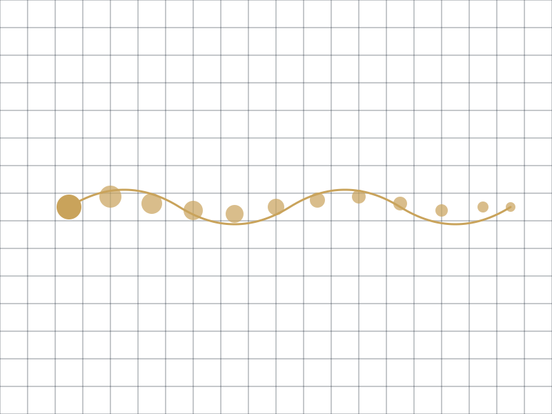
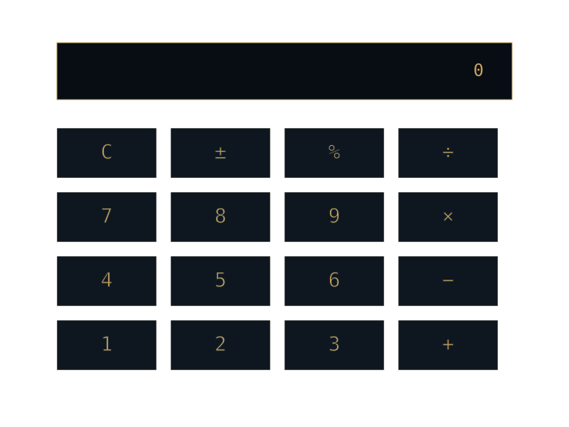
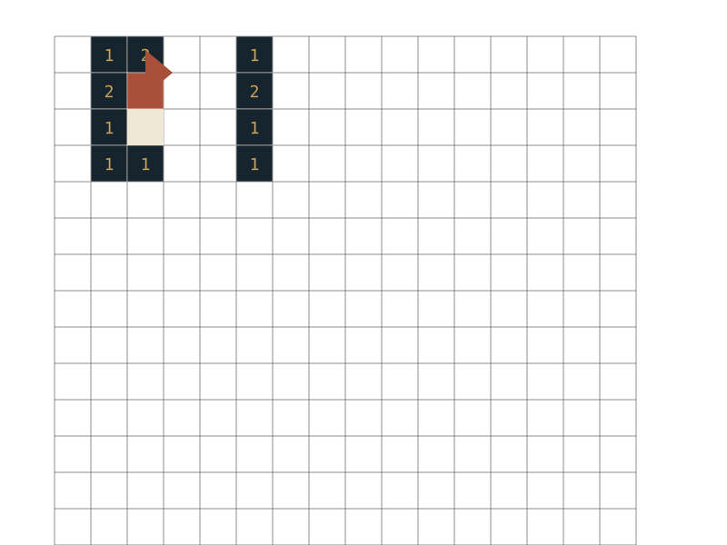

Koordinator Divisi PTT · CSA 24 USU
2026
ILMU KOMPUTER USU · ANGKATAN 2025
Mahasiswa Ilmu Komputer USU angkatan 2025. Sekarang di semester tiga — sedang mendalami machine learning dan data.
Medan · 2026
01 — TENTANG
Saya Billiam, mahasiswa Ilmu Komputer Universitas Sumatera Utara angkatan 2025. Saya besar di Gunungsitoli, Nias, dan sekarang belajar di Medan. Dua tempat itu cukup berbeda — terutama soal seberapa mudah teknologi bisa diakses.
Ketertarikan saya ada di machine learning dan data: bagaimana pola di dalam data bisa dipakai untuk mengambil keputusan, bukan sekadar jadi demo yang bagus di notebook. Saya juga peduli pada bagian yang sering dilewatkan orang — tampilan, alur, dan detail kecil yang membuat sesuatu benar-benar bisa dipakai.
Di luar kelas saya ikut organisasi dan kepanitiaan. Dari sana saya belajar hal yang tidak muncul di silabus: menyusun kebutuhan acara, berkoordinasi dengan banyak orang, dan tetap tenang ketika waktu makin mepet.
“Saya lebih suka membangun sesuatu yang kecil tapi selesai, daripada rencana besar yang berhenti di presentasi.”
02 — PERJALANAN
Urut dari yang terbaru. Yang masih berjalan ditandai jelas, yang sudah selesai ditandai selesai.
2025
2026
9 entri
2026
2026
2026
2026
2026
2026
2025
SMA
SMA
03 — PROYEK
Semua ini proyek belajar. Saya tulis apa adanya, tanpa membesar-besarkan.

01
EKSPLORASI · ANDROID STUDIO
Permainan ular klasik yang dibangun sebagai latihan pertama pengembangan aplikasi Android: mengatur input, gerak objek, dan kondisi menang-kalah.

02
EKSPLORASI · PYTHON · HTML
Kalkulator sederhana: logika perhitungan di Python, tampilan di HTML. Dibuat untuk memahami cara menghubungkan proses di balik layar dengan antarmuka yang dilihat pengguna.

03
EKSPLORASI · C++
Implementasi Minesweeper untuk melatih logika permainan, rekursi saat membuka petak kosong, dan pengelolaan struktur data sederhana.
04 — KEAHLIAN
Saya tidak mencantumkan persentase. Yang saya tulis adalah sejauh mana tiap hal benar-benar sudah saya pakai.
05 — DI LUAR KODE
Saya suka membuat musik di FL Studio — menyusun drum, bass, dan synthesizer, mengatur chord, lalu merapikan aransemen sampai terasa pas. Selera saya condong ke wave to earth dan Reality Club, jadi banyak eksperimen berakhir di nuansa indie dan alternatif.
Selain itu saya mengerjakan desain visual serta editing foto dan video. Bukan sebagai klaim ahli — lebih sebagai cara saya melatih rasa: memperhatikan komposisi, warna, dan hal-hal kecil yang membuat sesuatu terasa selesai.
Terbuka untuk diskusi soal machine learning, data, desain antarmuka, atau sekadar bertanya soal kuliah Ilmu Komputer. Email atau Instagram adalah tempat paling cepat untuk menemukan saya.
github.com/anomaly-develop ↗Medan, Sumatera Utara · Waktu Indonesia Barat (UTC+7)